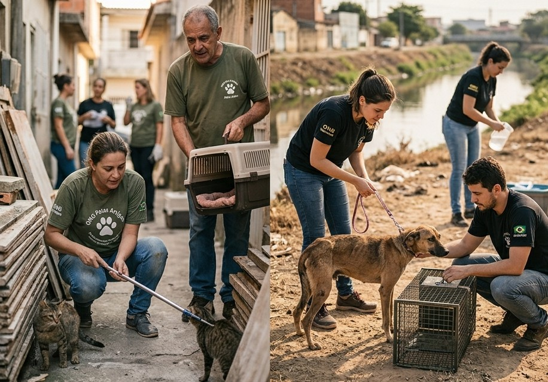
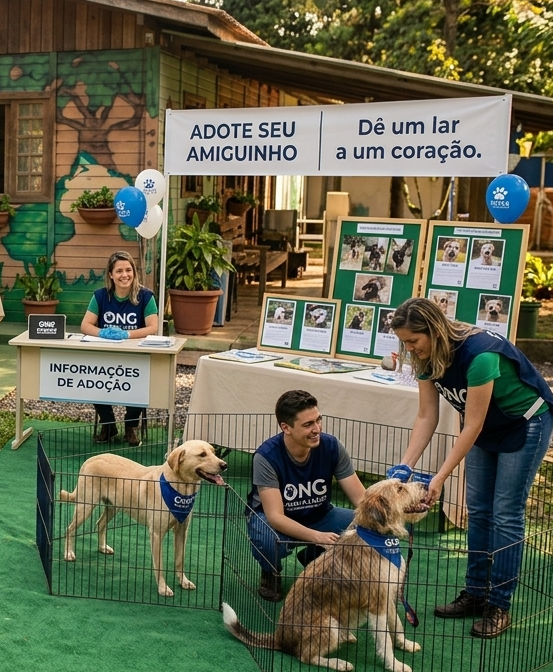
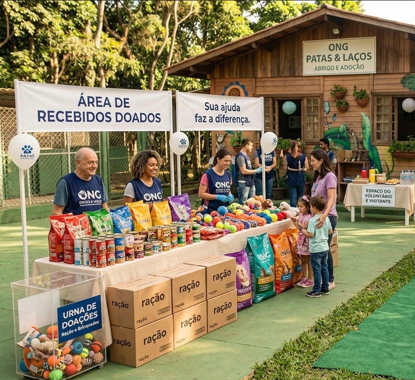

Resgate de Animais

A ONG ajuda animais abandonados e oferece os cuidados necessários.
Conheça algumas das iniciativas realizadas pela ONG Patas & Laços para ajudar e proteger os animais.

A ONG ajuda animais abandonados e oferece os cuidados necessários.

Incentivamos a adoção responsável e a busca por novos lares.

Realizamos campanhas para arrecadar alimentos e outros itens.